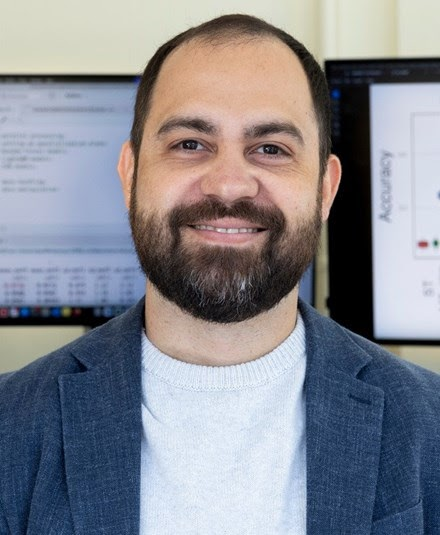

Samuel B. Fernandes
Assistant Professor of Agricultural Statistics and Quantitative Genetics
University of Arkansas Division of Agriculture (UADA)
Center for Agricultural Data Analytics (CADA)
Director, Experiment Station (DREX)
Research Interests
- Quantitative Genetics
- Statistics
- Plant Breeding
- Machine Learning & AI
Education
Ph.D. in Genetics and Plant Breeding — Federal University of Lavras (Brazil)
M.S. in Genetics and Plant Breeding — Federal University of Lavras (Brazil)
B.S. in Agronomy — University of Brasília (Brazil)